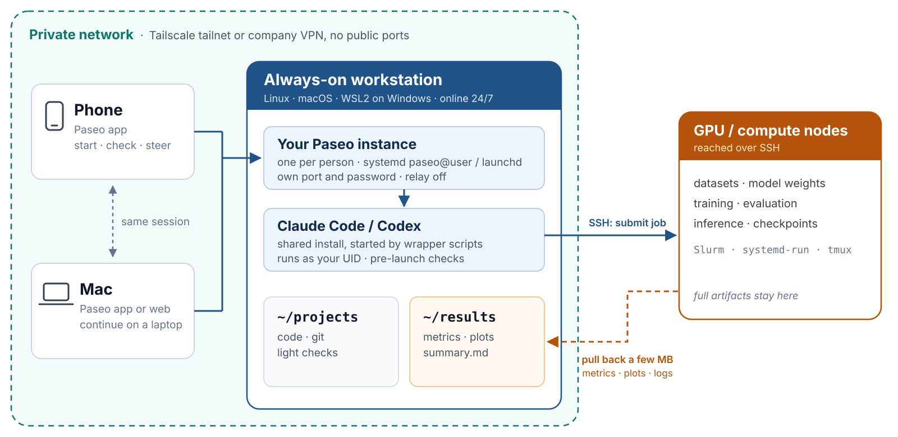

Coding agents such as Claude Code and Codex can now work on a task for a long stretch without supervision. What limits them is often where they run. Ideas arrive on a commute or in a queue, while the code, dependencies, keys and GPUs sit at a desk. Closing the laptop kills a half-finished run, every new device needs the environment set up again, and on a phone you can watch a session but not take it over.
PocketRig is the workflow I use every day to remove that coupling. One always-on computer at home runs my own Paseo instance, which hosts the Claude Code and Codex sessions. My phone and Mac reach it over a private Tailscale network; on a company network, the company VPN does the same job. Training and inference go to GPU nodes over SSH, and only a few megabytes of results come back to the workstation, where I read them on the phone and send the next instruction. The whole setup is packaged as Agent Skills in SuperFCR/falcary-skills, so an agent can install it for you.
The design rests on three rules:
- The workstation never sleeps, so a session outlives every client that connects to it.
- Nothing is exposed to the public internet; only my own devices can reach the Paseo port.
- Heavy compute and full artifacts stay on the compute nodes; the workstation keeps only code and small results.
None of this is tied to one operating system. Any always-on Unix-like machine can be the workstation: a Linux desktop or server, a Mac, or a Windows PC through WSL2. PocketRig relies only on ordinary Unix users and file permissions plus a service manager, which is systemd on Linux and WSL2 and launchd on macOS.
Why the Work Should Not Live on One Device
The trouble is not any particular device; it is that the work is tied to one of them. An agent session carries state: the repository, the environment, the credentials and the conversation so far. If that state lives on a laptop, the laptop lid decides when the agent stops, and a second device starts from nothing.
Moving the state to a machine that is always on, and making every other device a thin client of it, turns the phone and the laptop into interchangeable windows onto the same session. That needs exactly three things: one computer that stays on, one private network that only my devices can join, and one session that does not drop when a client disconnects.
Architecture


Each device has one job, and the expensive state lives in exactly one place:
| Device | Role | What lives there |
|---|---|---|
| Phone | Start tasks, check progress, send the next instruction | Only the Paseo app, plus Tailscale or the company VPN client |
| Mac | Continue the same session on a bigger screen | Nothing the session depends on |
| Always-on workstation | Run Paseo and the agents | Code, Git history, sessions, small results |
| GPU / compute nodes | Training, evaluation, inference | Data, model weights, checkpoints, full artifacts |
Layer 1: A Private Network with No Public Ports
Every device joins the same private network. For personal machines that is a Tailscale tailnet. Paseo listens only on the workstation's tailnet address, or on 127.0.0.1 with Tailscale forwarding in front of it, so no port is open to the public internet. PocketRig also turns Paseo's relay off, so clients always connect directly. Tailscale already encrypts the connection, which is why the Paseo client connects with Use SSL switched off.
Joining the tailnet does not open every port. Tailscale grants let each person reach only their own Paseo port and the SSH port, which starts to matter once the workstation is shared.
On native Linux and macOS, Paseo listens on the tailnet address directly, or stays on 127.0.0.1 behind tailscale serve, which survives address changes:
sudo tailscale serve --bg --tcp=6767 tcp://127.0.0.1:6767A Windows PC needs one extra hop. With Tailscale installed on Windows and Paseo running inside WSL2, WSL cannot bind the Windows tailnet address. Each instance therefore listens on 127.0.0.1 inside WSL; Windows forwards <tailnet IP>:<port> to its own 127.0.0.1:<port> with netsh portproxy, and WSL's localhost forwarding carries the connection into Linux. A firewall rule per port admits traffic only on the tailnet address and only from 100.64.0.0/10. A PowerShell loop reads paseo-user list --json every 30 seconds and adds or removes these rules, so a new tailnet address or a new user needs no manual step.
On a company network, the company VPN can replace Tailscale. If the workstation sits inside the corporate network and your phone and laptop already join that network through the company VPN, a second private network adds nothing. Set the workstation's internal address in /etc/paseo-workstation/workstation.conf before creating your instance, then add that address as the host in the Paseo app and connect with the VPN on:
PW_LISTEN_HOST=<workstation intranet IP> # instead of 127.0.0.1 or the tailnet IPThree things change compared with Tailscale:
- The VPN admits every employee, not just your devices, so there are no per-person grants. The Paseo password becomes the main gate; add a host firewall rule that admits the Paseo ports only from the VPN address range.
- The VPN encrypts the hop from your device into the company network, but inside that network the connection is only as private as the network itself.
- A long-running service on a company machine may need IT approval, so check the policy first.
On native Linux and macOS this is the single setting above. On WSL2 the Windows forwarding scripts look up the Tailscale address, so the company-VPN route needs a manual port forward.
Layer 2: One Paseo Instance per Person
Paseo runs coding-agent sessions as a daemon on one machine and lets its apps and web client connect to them. PocketRig gives each person their own instance, created with one command:
sudo paseo-user add "$USER" 6767paseo-user creates the system user if needed, generates a random connection password, writes the Paseo configuration and enables the service. On Linux and WSL the instance is the systemd unit paseo@<user>; on macOS it is a per-user LaunchDaemon. Either way it runs as the real user ID with a 077 umask, so sessions, projects and credentials stay in a private home directory. The password lands in ~/.paseo/client.env, readable only by its owner, and the paseo CLI loads it automatically.
Paseo does not call claude or codex directly. Its provider commands point at shared wrapper scripts, which do three things before handing over:
- Check that the caller belongs to the
ai-cli-usersgroup. - Run every check in
/etc/paseo-workstation/pre-launch.d/and refuse to start if one fails. The checks write only to stderr, so the protocol output that Paseo reads stays clean. execthe real program with the arguments unchanged.
This gives the workstation one place to enforce shared policy, such as the proxy settings in /etc/paseo-workstation/proxy.env, without touching anyone's personal configuration. Background services do not read shell aliases, so per-task preferences such as permission modes are set in Paseo itself.
The payoff is the hand-off. I start a task from the phone and lock it; the agent keeps running on the workstation. Later I open the same host and workspace on the Mac and continue the same conversation. Several clients can watch one session, but it works best with one client in charge at a time.
Keeping the Workstation Online
None of this works if the workstation sleeps: a sleeping or powered-off machine is simply unreachable from the phone. Each Paseo instance starts at boot under the system's service manager. On a Linux server that is all it takes; on a Linux desktop, also turn off suspend. On a Mac, launchd starts the instances and pmset stops system sleep on power, although FileVault still needs an unlock after a cold boot and a closed lid may still put a laptop to sleep. On a Windows PC, systemd units inside WSL do not keep the WSL instance itself alive, so a scheduled task registered by Install-PaseoWorkstationTask.ps1 runs the forwarding loop and keeps WSL running whether or not anyone is logged in to Windows.
The acceptance tests for this layer are deliberately unforgiving: a cold boot with nobody logged in, closing the terminal, sleep and resume, and on Windows a WSL restart. A process that shows up in ps proves little; what counts is reconnecting from the phone afterwards.
Layer 3: Heavy Compute Stays on the Nodes
The workstation edits code, runs Git and SSH, does light checks and displays small files. Data, models, training, evaluation and inference stay on the GPU nodes. The remote-compute skill turns that rule into a fixed loop that the agent follows the same way every time:
- Pin the code version. Commit and push locally, then check out the same commit on the node. If the node has uncommitted changes, stop and ask instead of overwriting them.
- Submit in the background. Use the node's scheduler (Slurm,
systemd-runor tmux) with explicit resources. The log goes tologs/<job-id>.log, and its first line records the commit. The job must not depend on the phone or on an open SSH session. - Report what matters. The agent returns the job ID, commit, log path and artifact directory. A status query returns the scheduler state, the latest key metrics and the last 20 log lines: short enough to read on one phone screen.
- Pull back only small results. Aggregate or sample on the node, check the size with
du -sh, and ask before pulling more than 50 MB. Results land in~/results/<project>/<job-id>/. Datasets, weights and checkpoints never leave the node, and rsync runs without--delete. - Summarize for the phone. The agent writes
summary.mdwith the job ID, commit, status, runtime, a metrics table with differences from the previous run, and plots rendered on the node as PNGs at most 1200 px wide. In the session it replies with three to five lines, the table and the path, and I can answer from the phone with "compare with the last run" or "rerun with a different learning rate".
Each project keeps its node details in a CLAUDE.local.md that is never committed. If anything is missing, the agent asks rather than falling back to running the job on the workstation:
host: compute-node-1 # alias in ~/.ssh/config
dir: /data/<user>/<project> # remote working directory
env: source ~/venvs/<project>/bin/activate
scheduler: slurm | systemd-run | tmuxOne distinction is easy to miss on a phone: stopping the agent in Paseo does not stop the job on the node. Cancelling a job with scancel or kill is a separate step, and the agent takes it only after asking. For dashboards such as TensorBoard, two SSH tunnels (node to workstation, then workstation to laptop) bring the page to the laptop; on the phone, the summary and the images are the better view.
Letting an Agent Set It Up
Every part of PocketRig is packaged as an Agent Skill. After installing the plugin, you can ask Claude Code or Codex in plain language, for example "set up this computer as a PocketRig workstation" or "my phone can't reach Paseo, please check". The agent follows the matching skill and stops for confirmation before sudo, network changes or reboots.
/plugin install pocketrig --marketplace SuperFCR/falcary-skills| Skill | What it does |
|---|---|
pocketrig-setup | Install the shared parts and create your own Paseo instance |
pocketrig-always-on | No sleep, WSL never reclaimed, start at boot, cold-boot acceptance |
pocketrig-connect | Connect phone and Mac over Tailscale and verify the session hand-off |
remote-compute | Submit node jobs, check status, pull back small results as a phone-friendly summary |
pocketrig-doctor | Read-only diagnosis, layer by layer |
pocketrig-team | Add, reset or deactivate members for family or a small team |
The recommended order is setup, always-on, connect, then remote-compute. Doctor is for when a layer breaks, and team only comes in when other people join. For Codex or other tools, ./skills/install.sh --codex (or --target <dir>) copies the skills instead.
From One Person to a Small Team
The same workstation can host family members or a small team. Each person gets a system user, a Paseo instance on their own port and a private handover of the connection details:
sudo paseo-user add alice 6767
sudo paseo-user add bob 6768| Item | Arrangement |
|---|---|
| Node, Paseo, Claude Code, Codex programs | Shared install maintained by root; read-only for users |
| Paseo and agent processes | Per person, run as the real user ID |
| Projects, sessions, configuration, SSH keys | Per person, private home (700), credential files 600 |
| Paseo connection password | Per person, random, readable only in your own client.env |
| Model account sign-in | Per person; no copying of anyone else's credentials |
| Network, proxy, CPU, memory, disk | Shared host; add per-user limits when needed |
The isolation comes from Unix user IDs and file permissions, and it is meant for people who trust each other. Root, sudo administrators, the Windows host administrator and the shared network are all inside the trust boundary; this is not container- or VM-level isolation against a hostile tenant. Each person also signs in to Claude Code and Codex with their own subscription, team seat or API key. That keeps usage and quotas separate, and it avoids several processes refreshing the same OAuth credentials at once.
Status and Limitations
PocketRig targets any always-on Unix-like host, and the Linux, WSL2 and macOS paths share the same installer and scripts. The machine I use every day happens to be a Windows 11 PC running WSL2, so that is where the design was first proven. A working machine is not the same as a clean install from the repository, though, and the project keeps the two apart:
| Check | Status |
|---|---|
| My daily workstation (WSL2 on Windows 11, Tailscale) | In daily use |
| 22 regression checks with simulated users, downloads and services | Pass |
| Plugin and marketplace manifests | Pass claude plugin validate |
| iPhone joining through Shadowrocket's built-in Tailscale | Verified on a real iPhone |
| Clean Linux / WSL install as root | Not yet accepted |
| macOS install, launchd and background model sign-in | Not yet accepted |
| Windows cold boot without login, WSL recovery | Not yet accepted on the deployment machine |
| Tailnet grants and cross-user denial from member clients | Not yet accepted on a real tailnet |
Company VPN instead of Tailscale (PW_LISTEN_HOST) | Supported by configuration; not yet accepted |
The reference versions are Paseo 0.13.2, Node 24, Codex 0.164 and Claude Code 2.1.308. The installer pins Paseo 0.13.2 because paseo-user hashes passwords through an internal Paseo module path; after an upgrade, re-verify it, or have each member run paseo daemon set-password in their own terminal. The skills and detailed docs are written in Chinese, which agents follow without trouble in any language.
Two rules are worth repeating. Use model accounts you are entitled to and follow each provider's terms, including their supported regions. And Tailscale only connects your own devices: it is not a proxy and does not change where your traffic exits. PocketRig is not affiliated with Paseo, Tailscale, Anthropic or OpenAI.
Try It
The quickest path is the plugin above: let the agent run pocketrig-setup, pocketrig-always-on and pocketrig-connect in turn. By hand on Linux or WSL, it starts like this (pick the Node version you need):
git clone https://github.com/SuperFCR/falcary-skills.git
cd falcary-skills/pocketrig
sudo ./linux/install.sh --install-node 24.22.1 --install-packages
sudo paseo-user add "$USER" 6767
claude auth login && codex loginThen sign in to Tailscale (or connect the company VPN) on the phone and the Mac, add a host in the Paseo app (<tailnet or intranet IP>:6767, Use SSL off, password from ~/.paseo/client.env), and go through the acceptance checklist in the repository before relying on it. The repository also has a four-minute promo video and a 30-second phone-to-Mac clip; both are rebuilt from code with fictional data, and their on-screen text is in Chinese.
Citation
Cited as:
Feng, Chaoran. (Nov 2026). PocketRig: A Phone-First Workflow for Coding Agents with Paseo. Chaoran Feng's Blog. https://www.falcary.com/blogs/pocketrig/.
Or
@article{feng2026pocketrig,
title = "PocketRig: A Phone-First Workflow for Coding Agents with Paseo",
author = "Feng, Chaoran",
journal = "falcary.com",
year = "2026",
month = "Nov",
url = "https://www.falcary.com/blogs/pocketrig/"
}References
- PocketRig source, skills and documentation. github.com/SuperFCR/falcary-skills.
- Paseo documentation: configuration, connectivity and security model.
- Tailscale: grants syntax, Windows and WSL2 and
tailscale serve. - Microsoft. Use systemd to manage Linux services with WSL.
- Anthropic. Agent Skills in Claude Code.